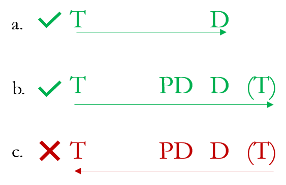
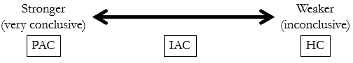

和声功能、终止与常见进行：听懂“回家与出发”
为什么某些和弦接在一起像讲故事、有些像句号、有些让人意犹未尽？掌握主(T)、下属(S)、属(D)三大和声功能、四种终止式，以及当代流行与爵士最核心的四和弦/五度圈模板。
1. 全局地图
2. 逐个概念
① 主（T）、下属（S）、属（D）三种和声功能
- 是什么
- 调内 7 个和弦分成三大阵营：主功能 T（I 为核心，vi 和 iii 共有两个音可代理稳定感）；下属/预属功能 S（IV 和 ii，都含 4 级音，负责离开家并蓄力）；属功能 D（V 和 vii°，含 7 级导音和 4 级音，制造强烈回 I 渴望）。
- 为什么需要
- 基本句法是
T → S → D → T。知道当前和弦处于哪一阶段，即兴时就知道该收紧还是放松。 - 在指板上
- 在 C 调对比听
C → Dm7 → G7 → C（S=ii7）与C → F → G7 → C（S=IV），体会它们共享 F 与 A 带来的相似准备感。 - 听起来
- 常见误解
- “和弦功能是必须遵守的铁律，V 后面不能接 IV。”流行和摇滚极爱走 V–IV–I（双变格回归），功能理论是描述常见心理预期的地图，不是法律。
② V7 解决的秘密与四种终止式
- 是什么
- 正格终止（V–I）像句号（7→1 上半音，4→3 下半音，两根声部同时解决）；变格终止（IV–I）像“阿门”，柔和神圣（布鲁斯最爱）；半终止（停在 V）像逗号/问号；阻碍终止（V–vi）假装回 I 却拐去 vi。
- 为什么需要
- 写旋律或即兴收句时，故意落在 V 和弦上制造问号（第 4 小节），第 8 小节再落回 I，段落立刻出现呼吸结构。
- 在指板上
- 在 2-3-4 弦弹 G7（x-x-5-7-6-x? 用 4-3-2 弦 G7=5-4-6）里的 F(4弦3品) 和 B(3弦4品)，分别滑向 C 的 E(4弦2品) 和 C(3弦5品)。
- 听起来
- 常见误解
- “只有 V–I 才算终止。”摇滚大量依赖 ♭VII–I（混合利底亚终止）和 IV–I，同样能给听众极强的回家感。
③ 流行音乐里的四和弦模板（OMT Schemas）
- 是什么
- OMT 总结出当代流行最常见的四大循环引擎：
• Doo-wop：I – vi – IV – V（50 年代到情歌永恒经典）
• Singer/Songwriter：I – V – vi – IV（大调稳重）或vi – IV – I – V（悲情史诗）
• Hopscotch：IV – V – vi – I（跳跃悬空）
• 双变格摇滚：♭VII – IV – I（《Sweet Home Alabama》） - 为什么需要
- 这些循环往往刻意避开正格终止在重拍落 I，让副歌像永动机一样无限接下去。
- 在指板上
- 同一组四个和弦 C–G–Am–F，如果从 C 起步是温暖肯定，改从 Am 起步（Am–F–C–G）情绪立刻变忧伤史诗。
- 听起来
- 常见误解
- “一首四个和弦的流行歌毫无乐理含量。”怎么通过低音位置（如 G/B）、加九音和声部流动把四个简单和弦玩出高级感才是真正功夫。
④ ii–V–I 与五度圈大链条
- 是什么
- 沿五度圈逆时针走的进行是最顺滑的重力下落：例如
vi – ii – V – I（如 Am7–Dm7–G7–Cmaj7），甚至整条 7 步链条（《Fly Me to the Moon》）。 - 为什么需要
- 之所以顺滑，是因为每个和弦的 7 音往下走半音（或全音）就正好落在下一个和弦的 3 音上，引导线无缝衔接。
- 在指板上
- 在本站「练耳与节奏」→ 功能级数练耳里，先听 I–IV–V–I 定调，再把耳朵挂在低音和引导线上分辨和弦进行。
- 听起来
- 常见误解
- “ii–V–I 只有爵士用。”流行（《Sunday Morning》）、R&B、华语抒情里 ii–V–I 到处都是，只是常把属七换成 V9sus4（如 Dm7–F/G–Cmaj7）。
3. 交互指板与伴奏实验室
点下方预设快速切换把位与音阶/和弦；点任意一格都能发声，开启持续音即可直接对着指板练习即兴与听辨。
4. 上琴练习
- G 调四大模板就近连接（75 BPM）：依次在 G 调弹 I–IV–V–I、I–vi–IV–V、I–V–vi–IV、ii–V–I 各 8 小节，全用 2-3-4 弦近转位并录音。重点验证：按节拍稳定、说得出级数与音名。
- 功能级数练耳（每日 5 分钟）：打开本站「练耳与节奏」→ 功能级数 + ToneDear 和弦进行，从 1/4/5 扩大到全 7 级。重点验证：按节拍稳定、说得出级数与音名。
- 问句 vs 答句对比（自由速度）：弹同一个 2 小节旋律，第一次停在 V（半终止感），第二次停在 I（正格解决），体会戏剧收放。重点验证：按节拍稳定、说得出级数与音名。
- Hooktheory 模板归类（选 5 首热曲）：在 Hooktheory TheoryTab 找 5 首歌并判定属于哪个四和弦模板，回听原录音核对。重点验证：按节拍稳定、说得出级数与音名。
5. 分歧点对照
| 容易混淆的两面 | 核心区别 | 实战怎么选 |
|---|---|---|
| I–V–vi–IV vs vi–IV–I–V | 起于主和弦 vs 起于关系小调 | 音集与和弦一模一样，但小节重拍和旋律收束位置彻底改变了情感重心 |
| 正格 V7–I vs 摇滚 ♭VII–IV–I | 古典强力导音推进 vs 摇滚开阔平推 | 吉他摇滚不喜欢太“乖”的 V7 导音，常改用从大调下方全音滑上来的 ♭VII |
6. 读原资料指南
- OMT: Introduction to Harmony & Cadences ↗ — 精读三种功能与四种终止定义 已嵌入下方全文
- OMT: Four-Chord Schemas & ii-V-I ↗ — 对照流行热曲理解 Schema 分析法 已嵌入下方全文
- ToneDear: Chord Progressions ↗ — 专门听辨级数进行的在线工具
📖 本地精要（免跳转直接看：ToneDear 和弦进行听辨（已完整内置于本站练耳室））
- 【本站直接平替】本站「练耳与节奏 → 进行听辨」已内置 14 种大调、摇滚调式、小调与副属/借用四和弦进行盲听，支持单和弦拆解重听。
和声导论与三大功能句法Introduction to HarmonyOMT · 和声、终止式与乐句结尾
Introduction to Harmony和声导论与三大功能句法
In this section, we'll focus on how composers of common-practice Western classical music use harmony in a phrase. Harmony is one important component (among others) of creating a phrase's sense of forward motion toward a goal. As we study harmony, it's important to keep two larger related concepts in mind: harmonic function and the phrase model.在西方大小调体系里，和声是推动乐句（phrase）产生清晰“前进感并落定在目标上”的核心引擎，关键要抓两个支柱：和声功能与“乐句功能模型”。
Harmonic function refers to three categories of chords:和声功能（Harmonic function）把全部和弦分成三大阵营：
- Tonic (T): Chords that sound stable, providing a sense of home or center. In Western classical music, the only chord that belongs to this category is I (in minor: i).主功能 T（Tonic）：听起来最稳定、像回到家一样（大调 I 级；小调 i 级）。
- Predominant (PD): Chords that transition away from tonic function toward dominant function. This category can be split into two groups:预属/下属功能 PD（Predominant）：充当从平稳的“家”离家走向紧张“属”的桥梁，又细分两档：
- Strong predominants signal that a dominant function chord is imminent: IV and ii (in minor: iv and iio).强预属：IV 和 ii（小调为 iv 和 iio），清晰预告属和弦马上要来。
- Weak predominants transition away from tonic, typically moving to a stronger predominant: iii and vi (in minor: VII, III, and VI).弱预属：iii 和 vi（小调为 VII、III、VI），常接在 I 后面慢慢滑向强预属。
- Dominant (D): Chords that provide a sense of urgency to resolve toward the tonic chord: V and viio (the same in minor).属功能 D（Dominant）：带有最强张力和导音牵引力，迫切想要解决回主和弦，主要是 V 和 viio。
The phrase model refers to the typical order and flow of harmonic functions in a phrase. The principle of the phrase model is that a phrase needs at least tonic function and dominant function harmonies in order to exhibit a sense of trajectory. More often, phrases also include a predominant harmony to heighten the sense of trajectory toward closure. Phrases almost always progress from left to right in the phrase model, not from right to left, although we'll discuss some exceptions later. This is summarized in Example 1.这三者在乐句里组成标准流向乐句功能模型（Phrase model）：T → PD → D (→ T)。通常顺着从左到右往前走（从主离家 → 下属蓄力 → 属产生最大张力 → 回到主休止），极少反方向从 D 倒流回 PD（见例 1）。

Open Music Theory · 和声、终止式与乐句结尾（Introduction to Harmony, Cadences, and Phrase Endings）。原文作者：John Peterson。Open Music Theory, Version 2，CC BY-SA 4.0。中文为本站翻译，以英文原文为准。图片版权：Phrase_Model © John Peterson is licensed under a CC BY-SA (Attribution ShareAlike) license；Example_3_Cadence_Strength_Spectrum
终止式导论Introduction to CadencesOMT · 和声、终止式与乐句结尾
Introduction to Cadences终止式导论
One way to create a sense of closure at the end of a phrase is through cadences—melodic and harmonic patterns that create goals, kind of like punctuation marks in literary sentences. They're important not only because they can help you determine phrase endings, but also because they help establish a key. As a result, listening for potential cadence points is typically a good first step in analysis.就像文章末尾要打逗号、问号还是句号，音乐通过旋律与和声组合出的终止式（Cadences）来给乐句收口并确立主调坐标——听出哪儿有终止点永远是扒歌定调第一招！
Example 2 shows two phrases and the two main categories of cadence: (1) inconclusive and (2) conclusive. The first phrase ends in m. 4 with a half cadence (HC) that sounds inconclusive. The second phrase begins in m. 5 and ends in m. 8 with an authentic cadence that sounds conclusive. The label PAC marks this as a particular kind of authentic cadence called a perfect authentic cadence, discussed below.例 2 演示了两类终止式：前四小节停在 V 级上像一个问号、没说完话的半终止（HC）；后四小节以 V–I 稳稳关门的叫正格终止（AC）（标出的 PAC 是最完美的完全正格终止）。
Example 2. Two cadences in Joseph Boulogne, Chevalier de Saint-George's "Ballet No. 6" from L'amant anonyme, Act II (0:00–0:07).例 2. Joseph Boulogne 作品中对比鲜明的半终止与正格终止片段。
Open Music Theory · 和声、终止式与乐句结尾（Introduction to Harmony, Cadences, and Phrase Endings）。原文作者：John Peterson。Open Music Theory, Version 2，CC BY-SA 4.0。中文为本站翻译，以英文原文为准。
正格终止（听感像完结的句号！）Authentic Cadences (they sound conclusive!)OMT · 和声、终止式与乐句结尾
Authentic Cadences (they sound conclusive!)正格终止（听感像完结的句号！）
An authentic cadence occurs when the harmonic progression V–I (or V–i in minor) marks the end of a phrase. There are two kinds of authentic cadence:凡是乐句结尾落在和声进行 V–I（或小调 V–i）上，均称为正格终止（Authentic cadence），细分为两种力度：
- A perfect authentic cadence (PAC) occurs when both of the following conditions are met (Example 2, m. 8):满足下面**全部两个硬条件**才叫完全正格终止（PAC）（见例 2 第 8 小节）：
- Do (1̂) is in the soprano over the tonic chord最高声部主旋律在最后一个主和弦上恰好唱/弹在主音 do (1̂) 上；
- Both V and I are in root positionV 和 I 两个和弦都必须是根音在最底下的原位和弦。
- An imperfect authentic cadence (IAC) occurs if either of the above two conditions isn't met, but V–I is still involved (Example 3). For instance, an IAC can occur when:只要V–I 里欠缺以上任何一条，就变成稍软一点的不完全正格终止（IAC）（见例 3），例如：
- Mi (me in minor) (3̂) is in the soprano over the tonic chord (as in Example 3), or最高音落在三音 mi (3̂) 或五音 (5̂) 上（如例 3），或
- V, I, or both harmonies are invertedV、I 任意一方使用了转位和弦。
Example 3. An imperfect authentic cadence (IAC) in Fanny Hensel, "Ferne" Op. 9, No. 2 (0:00–0:14).例 3. Fanny Hensel《Ferne》中落脚在三音上的不完全正格终止。
Open Music Theory · 和声、终止式与乐句结尾（Introduction to Harmony, Cadences, and Phrase Endings）。原文作者：John Peterson。Open Music Theory, Version 2，CC BY-SA 4.0。中文为本站翻译，以英文原文为准。
半终止与终止力度光谱Half Cadences (they sound inconclusive!)OMT · 和声、终止式与乐句结尾
Half Cadences (they sound inconclusive!)半终止与终止力度光谱
A half cadence (HC) occurs when a phrase ends on V (Example 2, m. 4). A variety of chords can precede V, so we often refer to the harmonic progression that marks HCs as "x–V."如果乐句在最后戛然而止停在了 V 和弦上，就像一句话讲半截留下问号“接下来呢？”——这叫半终止（HC）（“x–V”进行，见例 2 第 4 小节）。
For now, we'll restrict our vocabulary to only I and V chords (or i and V in minor) so we can learn some basic techniques of voice-leading.这里先集中看 I 与 V 的基本连接关系。
Cadential Strength and the IAC终止式的强弱光谱与 IAC

Example 4. Spectrum of cadential strength.例 4. 终止式收拢感从最强到最弱的光谱图。
Since there are many ways to compose an IAC (a composer can theoretically use various combinations of inverted chords and scale degrees in the melody), a composer can choose to make an IAC more or less strong.正因为 IAC 可以混搭转位和不同高音，作曲家能细腻调节每一句的结束有多坚决或有多悬疑：
The cadence in Example 3 above is relatively strong: it uses root position V–i with me (3̂) in the soprano, it comes at the end of a sentence in the lyrics, it uses a half note, it's followed by a rest, and the music that follows sounds like a new phrase.强力 IAC（例 3）：V–i 全原位、踩在长时值和休止符上、歌词正好收尾，收拢感接近句号。
The potential IAC in Example 5 is comparably weaker: it uses V6–I, the moment goes by relatively quickly, and it's followed by material that could easily be understood as continuing a phrase that's under way or as referencing the beginning of a phrase that has just concluded, something that would strengthen reading m. 5 as an IAC. Performers may disagree on whether Example 5 contains an IAC or not, and they may adjust their playing accordingly.弱化 IAC（例 5）：用 V6–I 转位而且节奏匆匆带过，听上去仿佛句意还没真正完结。
Example 5. A potential IAC in Schubert's Piano Sonata D. 845, III.例 5. 舒伯特钢琴奏鸣曲里的弱化半可疑 IAC 处。
An additional complication is that composers often avoid creating a PAC using progressions that fit the description of an IAC, but that don't mark the end of a phrase. In Example 6, m. 8 contains a potential IAC, but when m. 9 begins to repeat the material from m. 5 (compare the bass voice in m. 9 with the soprano in m. 5) it sounds like the passage is trying the run-up to the cadence again to achieve something stronger than the potential IAC at m. 8. We indicate that the cadence in m. 8 is subverted by crossing the label out on the score.更有甚者，作曲家会故意在 V 解决到 I 的关口做“半途抽身”的回避终止（subverted cadence）——用看似 IAC 实则立刻回头重来一遍的方式吊足听众胃口（例 6 第 8 小节）。
Example 6. Avoiding a cadence in Beethoven's Piano Sonata Op. 2, no. 3, I, mm. 1–13.例 6. 贝多芬 Op. 2 No. 3 中的“再来一遍”回避终止手法。
With so many possibilities, how can we determine what counts as a true IAC? The next section ("Hearing Cadences") offers some help.怎么靠耳朵精准分辨真终止和中途假过门？后续听辨章节带你用音乐直觉抓线索。
Open Music Theory · 和声、终止式与乐句结尾（Introduction to Harmony, Cadences, and Phrase Endings）。原文作者：John Peterson。Open Music Theory, Version 2，CC BY-SA 4.0。中文为本站翻译，以英文原文为准。图片版权：Phrase_Model © John Peterson is licensed under a CC BY-SA (Attribution ShareAlike) license；Example_3_Cadence_Strength_Spectrum
流行四和弦模板之一：Doo-wop 进行Doo-wopOMT · 流行四和弦模板
Doo-wop流行四和弦模板之一：Doo-wop 进行
Example 1 shows music notation, chord symbols, and Roman numerals for the doo-wop schema: I–vi–IV–V, or C–Ami–F–G in C major.例 1 展示了流行乐坛长盛不衰的 Doo-wop 模板：I–vi–IV–V（C 调里就是 C–Ami–F–G）。
Example 1. The doo-wop schema (left) and a common variation of it that replaces IV with ii (right).例 1. 原版 Doo-wop（I–vi–IV–V）及其经典变体（把 IV 换成同功能的 ii：I–vi–ii–V）。
The name for this cyclical chord progression comes from its common use in rock ballads from the 1950s and early 1960s, such as “Duke of Earl” by Gene Chandler (1962). However, it has continued to be used frequently ever since: examples include the verse and chorus of “Friday” by Rebecca Black (2011) and the chorus of “Total Eclipse of the Heart” by Bonnie Tyler (1983) (starts at 0:49).该循环源于 1950–60 年代摇滚情歌，一路流行到今天（从经典《Duke of Earl》、Bonnie Tyler《Total Eclipse of the Heart》直到当代流行歌曲）。
Substituting ii for IV用 ii 替代 IV
Because ii and IV share the same function in this chord progression, ii can be swapped out for IV, as in Bruce Springsteen's "Hungry Heart" (1980).由于 ii 和 IV 分享完全相同的下属预属功能，实际编曲中极常把 I–vi–IV–V 换成声音略带爵士平滑低音的 I–vi–ii–V（如 Bruce Springsteen《Hungry Heart》）。
Rotation起点转轮（Rotation）
Because the doo-wop schema is typically employed in cycles, it can also start on a different chord in the cycle and then proceed through the same succession of chords (rotation). For example, “Viva la Vida” by Coldplay (2008) works through a cyclical repetition of the same succession of chords, but the phrases begin on IV rather than I (Example 2).因为四和弦循环像摩天轮般周而复始，许多歌曲不从 I 起步而改从循环中的另一级开始（即同样按顺序列轮转）。最著名案例是 Coldplay《Viva la Vida》：一直跑在同一条轮盘轨道上，只是每次从 IV 级起步（IV–V–I–vi）（例 2）！
Example 2. Rotated doo-wop progression in Coldplay, "Viva la Vida."例 2. Coldplay《Viva la Vida》展示的轮转（Rotated）Doo-wop 进行。
Open Music Theory · 流行四和弦模板（Four-Chord Schemas）。原文作者：Bryn Hughes and Megan Lavengood。Open Music Theory, Version 2，CC BY-SA 4.0。中文为本站翻译，以英文原文为准。
流行四和弦模板之二：Hopscotch 跳房子进行HopscotchOMT · 流行四和弦模板
Hopscotch流行四和弦模板之二：Hopscotch 跳房子进行
In recent years (since about 2010), another type of four-chord schema has become increasingly common: IV–V–vi–I, or VI–VII–i–III in minor. Examples include "Dancing with a Stranger" by Sam Smith (2019) and "No Brainer" by DJ Khaled, Justin Bieber, and Quavo (2018). We will refer to this as the hopscotch schema because of its root motion: step, step, skip.2010 年后极其火爆的四和弦模版：大调视角 IV–V–vi–I（或小调视角 VI–VII–i–III），常见于 Sam Smith、Justin Bieber 等大热单曲。因其根音走向像“走两格步进、跳一格三度”（例 6），得名跳房子模板（Hopscotch）。
Like the singer/songwriter schema, the hopscotch schema can be tonally ambiguous. In other words, in the progression F–G–Ami–C, either Ami or C might sound like tonic (Example 6). There is often no definitive cadential motion, especially moving into the C chord.和创作型四和弦模板一样，这套进行天生具有强烈的调性模糊性：反复循环 F–G–Ami–C 时，整首歌把 Am 当小主音还是把 C 当大主音几乎悬在半空难分伯仲。
Example 6. The hopscotch schema, with annotations showing the “step-step-skip” pattern.例 6. 展示根音“步进–步进–跳进”的跳房子进行的谱面标注。
Replacing VII in minor with V用大 V 取代小调 VII
An especially common harmonic substitution that encourages a minor-mode interpretation of the hopscotch schema is to replace the subtonic VII chord with the major V chord, so that VI–VII–i–III becomes VI–V–i–III. One song that does this is "Love to Hate Me" by BLACKPINK (2020). Although these chords have the same harmonic function, the two chords have quite distinct colors, since the major V chord in minor uses ti (7̂) while VII uses te (↓7̂). Some songs, like "Mixed Personalities" by YNW Melly, invert this V chord, which allows the bass motion of the hopscotch schema to stay the same (step-step-skip) even though the root motion has changed (Example 7).为了把调性牢牢拽向小调感觉，流行制作人极常把 VI–VII–i–III 里的降七级大三和弦 VII 换成含升导音的大三 V 级（VI–V–i–III），如 BLACKPINK《Love to Hate Me》。尽管同为属功能，VII 用自然小七度 te (↓7̂) 而大 V 用尖锐导音 ti (7̂)，色彩截然不同；如把大 V 转位成第一转位，甚至能保留原模版根音贝斯线“步进–步进–跳进”的顺滑低音（例 7，注意根音进行已变但低音线不变）。
Example 7. The hopscotch schema with V replacing VII, meaning the G of the VII is replaced with the G♯ of the V chord.例 7. 用含导音的大 V 级替代自然 VII 级后的色彩反差。
Open Music Theory · 流行四和弦模板（Four-Chord Schemas）。原文作者：Bryn Hughes and Megan Lavengood。Open Music Theory, Version 2，CC BY-SA 4.0。中文为本站翻译，以英文原文为准。
ii–V–I 作为识别模板（Schema）ii–V–I as SchemaOMT · ii–V–I 进行
ii–V–I as Schemaii–V–I 作为识别模板（Schema）
Schema is a useful concept in music theory, used in many ways within this book (pop harmony, for one). Put simply, schemas are common patterns our brains can recognize, even when variations are altering a specific presentation of that schema.和声模板（Schema）是指人耳听多了以后自动认出来的原型套路（如流行和声套路）——哪怕个别和弦被做了替换加花，老练的耳朵也能一眼认出“这就是那个骨架！”。
The ii–V–I progression is an example of a schema. It happens so frequently that informed listeners can recognize the schema in many formats. Some examples of alterations are given in Example 3. In “Misty,” the ma7 chord is replaced with a 6 chord (this occurred in “My Funny Valentine” in Example 2 also). In “Prelude to a Kiss,” the typically dominant-quality V chord is replaced with an augmented chord (the minor seventh is preserved). The V chord is altered in “A Night in Tunisia,” but this time, the fifth is lowered instead of raised.ii–V–I 就是爵士与现代和声最顶级的原型模板。例 3 展示了数首经典标准曲里的变形玩法：《Misty》与《My Funny Valentine》用 6 和弦替代了 Imaj7；《Prelude to a Kiss》把 V7 变成增属七（G7+）；《A Night in Tunisia》把 V7 变成降五属七（V7♭5）——不管怎么加花改动，底层“ii–V–I”推动感始终分毫不差！
Example 3. The ii–V–I is still recognizable, even if alterations occur.例 3. 哪怕发生各种延伸与变音替换，人耳照样能识出底层的 ii–V–I 骨架。
Open Music Theory · ii–V–I 进行（ii–V–I）。原文作者：Megan Lavengood。Open Music Theory, Version 2，CC BY-SA 4.0。中文为本站翻译，以英文原文为准。
回转进行（Turnarounds）TurnaroundsOMT · ii–V–I 进行
Turnarounds回转进行（Turnarounds）
A particularly common version of applied ii–Vs comes in what is called the turnaround. In the broadest sense, a turnaround is a progression that serves to loop back to the original tonic chord, and the typical progression that achieves this is I–vi–ii–V–I. Using the concept of applied chords, we can substitute a V7/ii for the vi chord, since they share the same root. But we can also precede that V7 with its ii chord—effectively, a ii/ii (two of two). Thus, the ii chord of the turnaround is tonicized with its own ii–V–(I) progression. This tonicized version of the turnaround is a very common variant (Example 8).把副属/从属 ii–V 应用到极限的常见形式就是爵士与布鲁斯末尾必弹的回转进行（Turnaround）：放在乐句段落最后一两小节，用动荡和声把听感稳稳拽回下一圈开头的 I 级主和弦，经典原型为 I–vi–ii–V–I。实操中常把 vi 换成同根音的副属和弦 V7/ii，甚至再往前塞进它自己的 ii——形成顺畅的二级套二级副属回转链（例 8）。
Example 8. The turnaround schema has diatonic and chromatic variants.例 8. 回转进行（Turnaround）的自然顺阶版与半音离调变形。
Open Music Theory · ii–V–I 进行（ii–V–I）。原文作者：Megan Lavengood。Open Music Theory, Version 2，CC BY-SA 4.0。中文为本站翻译，以英文原文为准。
⚡ 本模块其余配套课程与工具的本地精要 / 平替
- Jens Larsen（现代/爵士吉他：ii–V–I、壳和弦、三和弦声部连接与目标音即兴） ↗
📖 本地精要（免跳转直接看：Jens Larsen：现代/爵士吉他 3–7 引导线、壳和弦与目标音即兴）
- 【先弹 3 音和 7 音】和弦的根音由贝斯手负责，5 音不决定性质；吉他手伴奏用 1–3–7 壳和弦（Shell Voicing），独奏强拍瞄准 3 音和 7 音，就能只用 2～3 个音把整个 ii–V–I 交代清楚。
- 【半音包围（Enclosure）】在目标和弦音（比如第 1 拍的 3 音）到来前的第 4 拍，先弹它上方顺阶邻音 + 下方半音，再落回目标音，立刻消除“背琶音练习曲”的机械感。
- David Bennett Piano（用海量摇滚/流行热曲拆解调式、副属与调式互换） ↗
📖 本地精要（免跳转直接看：David Bennett Piano：流行与摇滚金曲背后的和声套路与调式基因）
- 【四大流行循环】I–V–vi–IV（开朗大气）、vi–IV–I–V（叙事伤感）、I–vi–IV–V（复古浪漫）、I–♭VII–IV–I（混合利底亚摇滚双变格）。
- 【调外催泪三剑客】III7（V/vi，如《Creep》《海阔天空》）、iv（平行小调小四级，走 6→♭6→5 半音下行）、♭VI–♭VII–I（马里奥终止 / 摇滚凯旋进行）。
- musictheory.net：Phrases and Cadences ↗
📖 本地精要（免跳转直接看：musictheory.net 互动图文短课核心提要）
- 该短课用极简五线谱动画演示基础乐理定义（音符时值、拍号、半音全音、大调/小调音阶、音程转位、三/七和弦及罗马数字）。
- 这些核心定义已 100% 转化为电吉他指板视角，嵌在本模块对应的「讲义」与每日「双语精读卡片」中，读完页内卡片即可完全掌握。
- musictheory.net：Circle Progressions ↗
📖 本地精要（免跳转直接看：musictheory.net 互动图文短课核心提要）
- 该短课用极简五线谱动画演示基础乐理定义（音符时值、拍号、半音全音、大调/小调音阶、音程转位、三/七和弦及罗马数字）。
- 这些核心定义已 100% 转化为电吉他指板视角，嵌在本模块对应的「讲义」与每日「双语精读卡片」中，读完页内卡片即可完全掌握。
- musictheory.net：Common Chord Progressions ↗
📖 本地精要（免跳转直接看：musictheory.net 互动图文短课核心提要）
- 该短课用极简五线谱动画演示基础乐理定义（音符时值、拍号、半音全音、大调/小调音阶、音程转位、三/七和弦及罗马数字）。
- 这些核心定义已 100% 转化为电吉他指板视角，嵌在本模块对应的「讲义」与每日「双语精读卡片」中，读完页内卡片即可完全掌握。
- Functional Ear Trainer（听级数，免费 App） ↗
📖 本地精要（免跳转直接看：Functional Ear Trainer 听级数训练法（已完整内置于本站练耳室））
- 【Alain Benbassat 听级数核心法】绝不孤立数半音！每次先播放 I–IV–V–I 确立调性引力场，再去感受目标音掉在调性里的“稳定感/倾向感”（如 4 想落 3、7 想升 1）。本站已内置完整浏览器版！
7. 自测 5 题
答案
通常不一样：前者听起来像大调 I 为家，后者由于重拍和起止在 vi，常常听作关系小调为主（如 Am–F–C–G）。
答案
因为 vi 和 I 共享 1 级主音与 3 级中音（如 Am 与 C 共享 C、E），能接住导音解决到主音的预期却换了底色。
答案
一派视作 G 大调的 V–IV–I（双变格回归）；一派视作 D 混合利底亚的 I–♭VII–IV（主音落 D）。
答案
先听低音的根音移动规律：下行半/全音常是 I–V/7–vi，五度循环常是 vi–ii–V–I，跳进四度多是 I–IV–V。
答案
Am7(5-x-5-5-x-x) → D7(x-5-4-5-x-x) → Gmaj7(3-x-4-4-x-x)，3 弦与 4 弦呈优雅阶梯下行。
8. 在歌里听一听
- Hallelujah（Leonard Cohen）：歌词直接唱出级数进行 C–F–G–Am–F
- Fly Me to the Moon（Bart Howard）：完整五度圈链条 Am7–Dm7–G7–Cmaj7–Fmaj7–Bm7♭5–E7–Am
- 晴天（周杰伦）：G 大调 vi–IV–I–V（Em7–C–G–D）循环与双音旋律
9. 带去原资料的 3 个问题
- 为什么古典教材里说 IV–V 是标准预属推进，却尽量避免直接写 V–IV（而摇滚恰好反过来）？
- 在“五度圈进行（Circle of Fifths progression）”如 Am7–Dm7–G7–Cmaj7–Fmaj7–Bm7♭5–E7–Am 里，为什么必须容忍 F 到 B 这个减五度进行？
- 如何在只有三个和弦的循环里，通过改变和弦转位（低音线）做出像四个或八个和弦一样的变化？